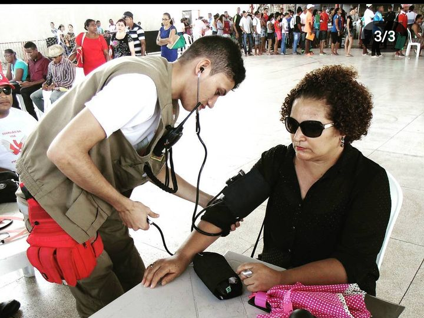
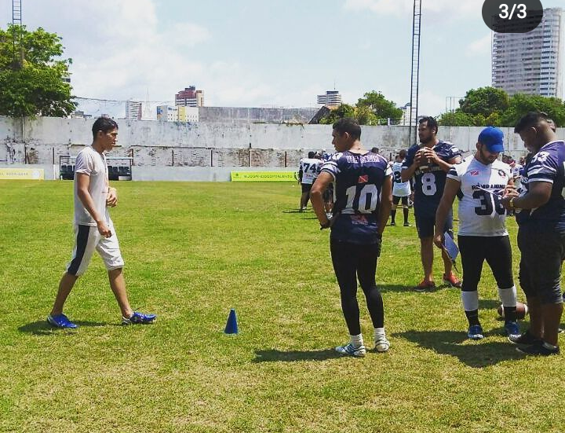
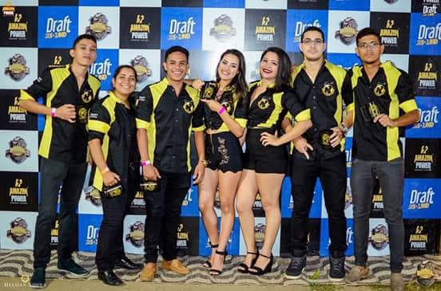
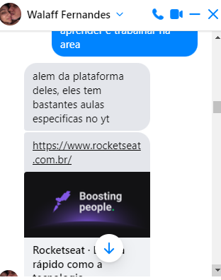

Bem, foi aqui começou o meu mundo, na verdade não especificamente essa ai na foto, mas logo quando estava no ensino fundamental, meu primeiro contato com a LINGUA INGLESA não foi a das melhores, mas meu professor na época me fez gostar e logo após isso eu continuei estudando, nesse meio tempo até o final do ensino médio eu tive meus primeiros contatos com a informatica mesmo e edições de videos, com um grupo de amigos, e no caso tinhamos dois editores que no caso um era eu, a partir dai vi as possibilidades na area da programação, mas vê os 010101011 que a gente via quanto a hackers, me fez desestimular muitas vezes porque achei que era coisa de outro mundo, mais ainda sim eu prossegui na carreira de PROFESSOR.
E DURANTE A FACULDADE

Foi onde me redescobri e vi que tinha aptidão pra outras areas, vi que poderia ir além, que poderia seguir novos rumos, onde também não vi que eu só poderia ficar na educação, até mesmo tenho vontade de estuda nessa aréa, e bem meu amigo que me apresentou o O GRUPO DE SOCORRISTA GUARDIÃO DA VIDA
que foi o meu TCC durante a faculdade, mas imaginem que já estava ligado a programação desde o início com a aprendizagem e a linguagem ja que me formei como professor de inglês kkkkk.
E NESSE MEIO TEMPO DA FACULDADE....

GANHEI DUAS PAIXÕES, e uma dela foi F.A. que numa dessas ocasiões como SOCORRISTA, jogando pra lá e pra cá com a bola oval que usamos, o times me pediram pra fazer o teste, onde nem material eu tinha, nem chuteira, short, nem nada, era pago também e nem isso eu paguei, kkkk... que sorte!!! e depois de uns dias lá estava eu dentro do time REMO LIONS time de FUTEBOL AMERICANO do REMO, um dos maiores times do Pará, infelizmente não pude continuar, pois o material era caro, mas me apaixonei pelo esporte
COMO SOCORRISTA TAMBÉM PUDE CONHECER MINHA OUTRA PAIXÃO

Eu, pude conhecer pessoas que amavam a DANÇA mas especificamente o FORRÓ, participei de uma comitiva de forró, la aprendi muita coisa, hoje não faço mais parte, entretanto, me deu novo folêgo para continuar e ir atrás e aprender novos ritmos kkk, pude ir além, e essas pessoa me ajudaram muito nisso.
VOLTANDO A FACULDADE ENCONTREI MEU MOTIVO DE VIVER
Na reta final da faculdade conheci o AMOR DA MINHA VIDA, ela, sem dúvidas, foi uma das melhores coisas da minha vida, senão a melhor, acho que sem ela, eu não poderia estar aonde estou, conseguir o que consigo hoje, e conheci de forma inusitada, quando a minha colega de turma que era irmã dela ia pedir dinheiro do Busão para ir embora, então quase todo dia era sagrado isso kkkkk... não foi facil, na verdade sobrevivi, e tô aqui pra contar a história, e quando ela ver isso vai me matar certeza, então orem por mim galera kkkkk...
BEM E JÁ LONGE DE CASA E EM OUTRO ESTADO

já trabalhando em outro estado atualmente, me veio a cabeça de relamente entra de cabeça na ÁREA DA PROGRAMAÇÃO e bem la na adolescência pra faculdade eu criei amigos e cada um com suas afinidades, então além de mim, tinha o ELDSON, RENATO, JUNIOR E O WALLAF e mais na parte se tecnologia o WALAFF sempre se destacou mais do que a mim e o ELDSON. Durante um certo tempo ELDSON começou a estudar programação e mencionou que WALAFF tava mais adiantado que ele em muita coisa, e vi a oportunidade, porém eu não segui por não havia nenhum computador para mim ESTUDAR E CODAR mas quando vim trabalhar para o Maranhão, resolvi realmente encarar e falei com WALAFF e falei que queria estudar programação e foi ai que ele me apresentou a ROCKETSEAT pude realmente começar o meu caminho na area da programação e to vendo que to conseguindo fazer muita coisa e to tendo facilidade devido a todo o meu knowhow como inglês, linguagem, estudo, aprendizagem, todo aquele network, vi que poderia conseguir fazer isso tambem, e to me sentido muito realizado com isso.